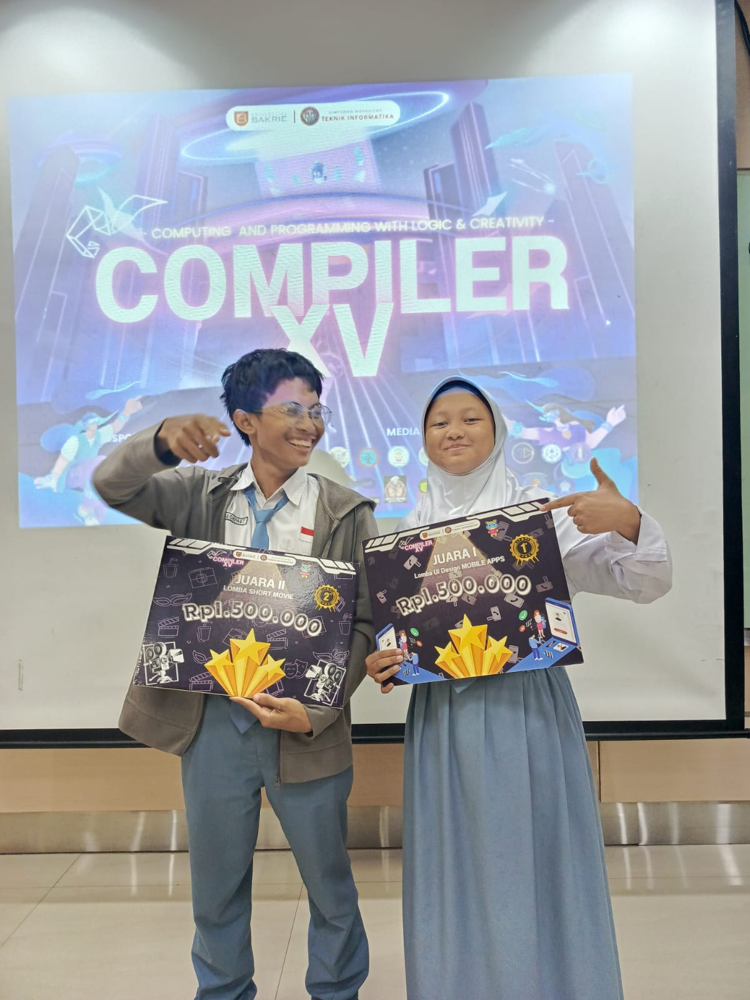
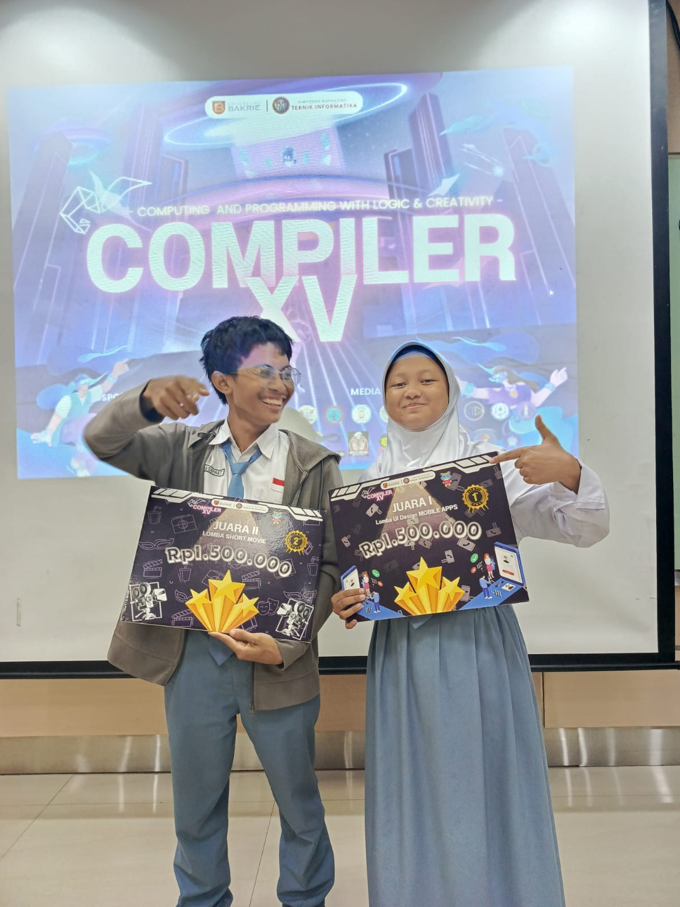

Kelompok Ilmiah Remaja (KIR) SMKN 1 Jakarta berdiri sejak tahun 2012, awalnya, KIR hanya kelompok kecil yang sering diikutkan Bu Siti ke lomba-lomba ilmiah di Jakarta Pusat. Karena sering menang, akhirnya diputuskan untuk membuat wadah resmi, dan lahirlah KIR.
Seiring waktu, KIR semakin berkembang dan terstruktur. Salah satu langkah penting adalah pelantikan anggota baru dan pembentukan sistem per-angkatan, yang disebut sebagai AOB (Angkatan Organisasi Baru). Setiap tahun, ada angkatan baru yang memimpin KIR, menjaga suasana tetap fresh dan seru.
KIR nggak cuma tentang belajar dan eksperimen, tapi juga tempat untuk bertemu teman-teman baru, berkolaborasi, dan bersenang-senang. Kegiatan di KIR meliputi eksperimen biologi, fisika, kimia, hingga merancang alat-alat teknologi inovatif. Selain itu, KIR juga mempelajari ilmu sosial, memberikan perspektif yang lebih luas dan memahami dinamika masyarakat.
Setiap proyek mengajarkan kerja sama tim, berpikir kritis, dan mengatasi masalah. Bergabung di KIR memberikan banyak kesempatan untuk ikut lomba ilmiah dan teknologi, baik di tingkat sekolah, kota, bahkan nasional, serta belajar langsung dari alumni berpengalaman. Jadi, kalau kamu ingin ikut dalam petualangan ilmiah yang seru dan mengembangkan kemampuan teknis serta pemahaman sosial sambil tetap asyik dan seru, gabunglah ke KIR SMKN 1 Jakarta!
Evelly khanzania putri
Fauzan Abrar Putra Syadeva

Faezya Aditya

Siti Kayyisah Ramadhani
Raykenzie Nazaru F.
Philip Rahmat
Megawati

Bunga Husnatul Mubarok

Maharani Indah Pratiwi
Selama perjalanan KIR, banyak pencapaian diraih, termasuk partisipasi dan kemenangan dalam lomba LKIR (Lomba Karya Ilmiah Remaja) tingkat Jakarta Pusat, Pemuda Pelopor, dan LKTI (Lomba Karya Tulis Ilmiah). Prestasi-prestasi ini menunjukkan bahwa KIR SMKN 1 Jakarta adalah wadah inspiratif bagi remaja untuk mengembangkan bakat dalam ilmu pengetahuan, teknologi, dan sosial.
 



Join us for an exciting event!